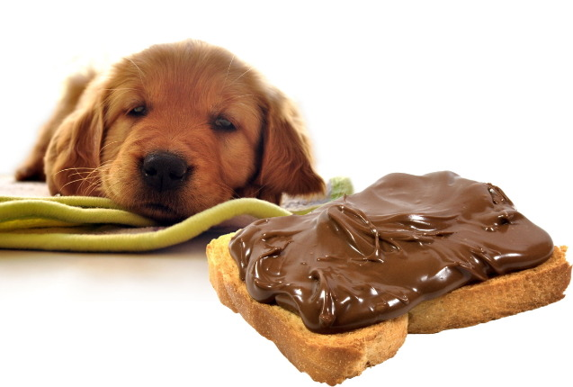
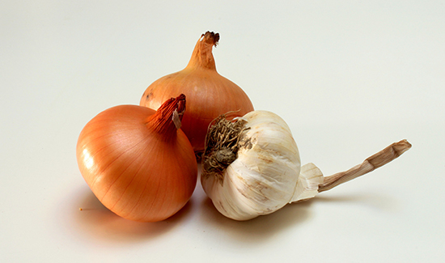
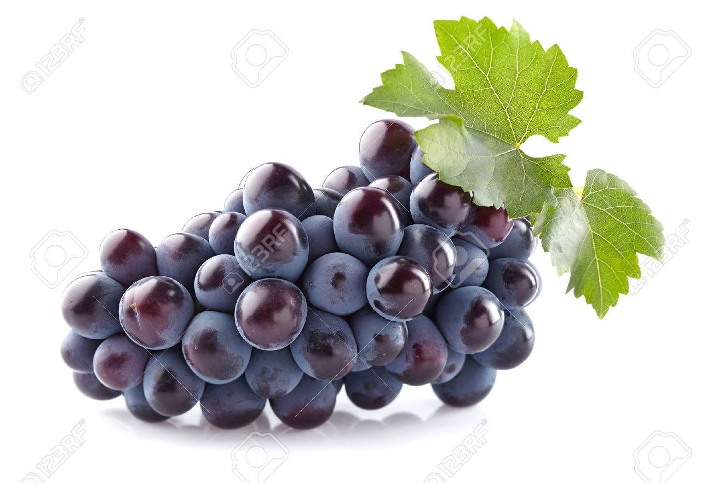

!나쁜 음식!
강아지에게 안좋은 음식을 소개해드리겠습니다!
강아지에게 해로운 음식 TOP 3
●초콜릿
- 효능：
- 메탈크산틴 이라는 화학성분이 구토, 설사, 불규칙한 심박동을 유발하여 심하면 심정지까지 올 수 있다고 해요.
●양파&마늘
- 효능：
- 고단백 식품으로, 강아지의 대표 보양식! 수술 후 or 출산견의 체력회복에 좋으며, 감기나 구토 증상 완화에도 도움이 된다고 해요.
●포도
- 효능：
- 신장에 손실을 주는 중독성이 있어서, 신부전증을 유발한다고 해요.